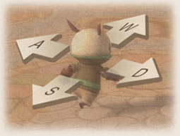
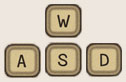
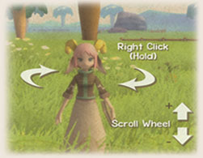

การเคลื่อนที่

กดเพื่อบังคับตัวละครให้วิ่ง
ไปในทิศทางที่ต้องการ
มุมกล้อง
- คลิกเมาส์ขวาค้างไว้แล้วลากเพื่อหมุน มุมกล้อง
- ใช้ Mouse Scroll Wheel หรือ
Page Up / Page Down เพื่อปรับระยะ
*สามารถคลิกปุ่ม End ค้างไว้เพื่อปรับระยะ เป็นมุมเงยได้
